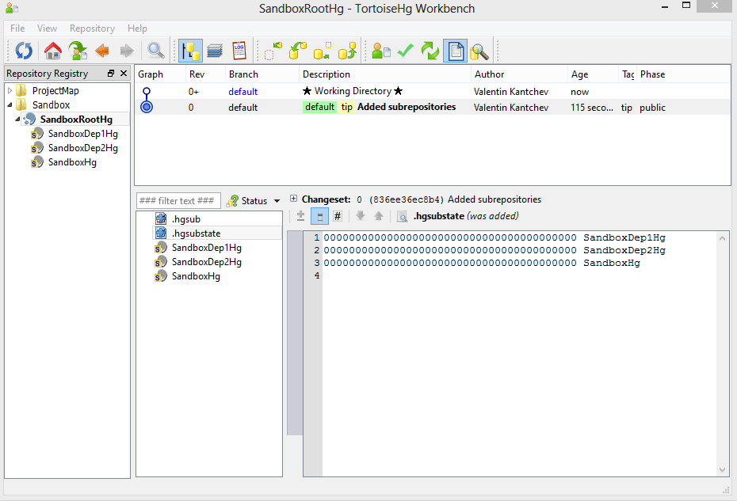
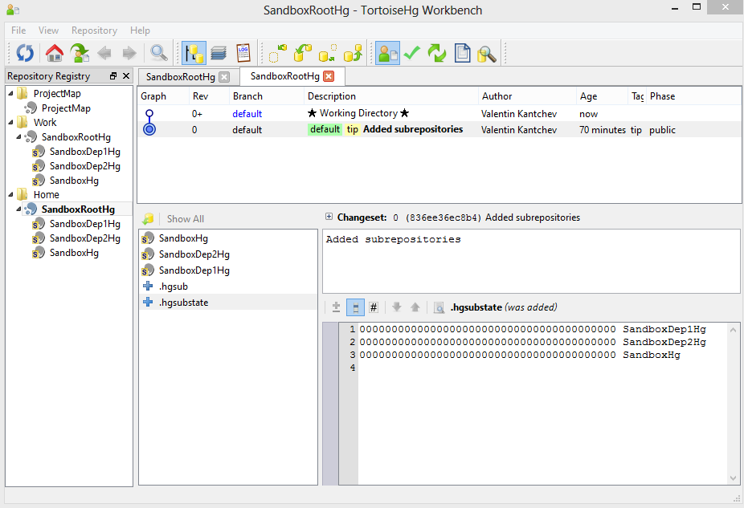
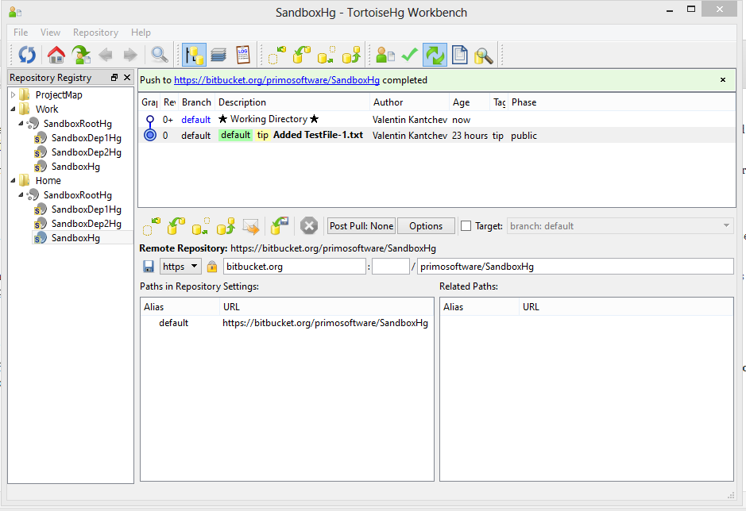
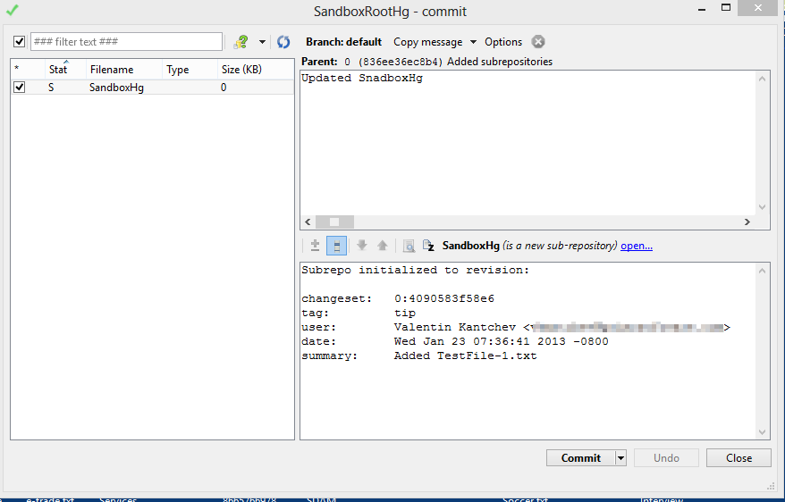
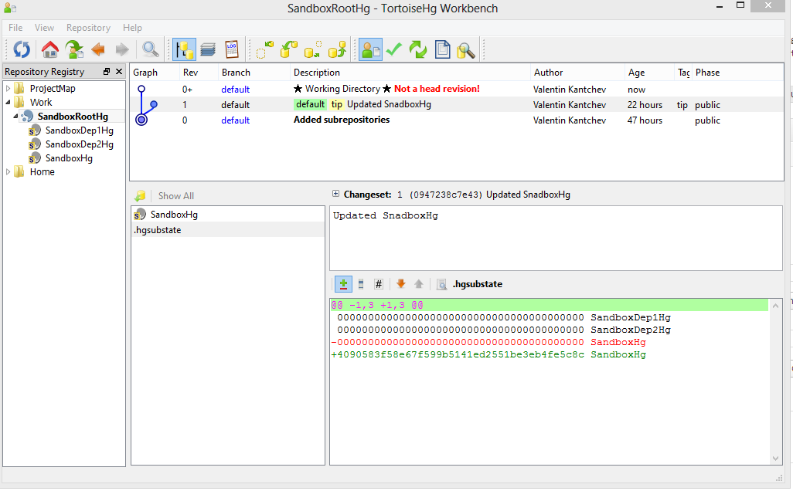
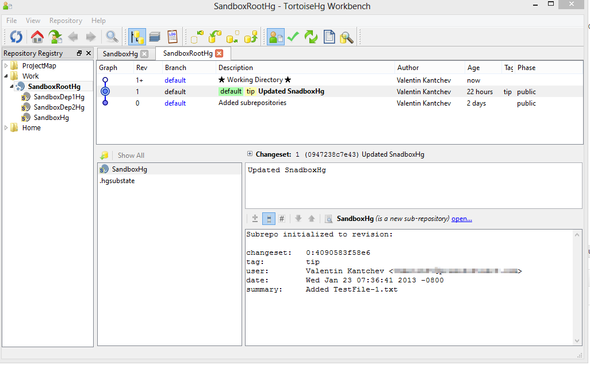

This post summarizes the Mercurial subrepository vs the Subversion externals experience. This is the third and last post of a multi-part article about Mercurial subrepositories. Please make sure you read Part 1 and Part 2 before reading this post.
In a few words, Mercurial subrepositories are very similar to Subversion “svn:externals” and can be used pretty much the same way. However, there are some differences in the workflow, because of the distributed nature of Mercurial. Here are the main differences from Subversion:
You always work in a copy / clone of a remote shared repository.
You may commit changes multiple times, but those changes are not visible to others unless you push to the remote shared repository.
A commit + push in a subrepository is treated as a local change in the top-level root repository. To make the root change permanent, you have to do a commit + push of the root repository as well.
A pull from a remote repository just downloads the latest available changes. In order to apply/merge the changes, you have to manually update your working copy.
On good thing about the pull+update workflow is that, it guards against accidentally losing local changes and allows you to do code merges at your convenience.You can also revert an update and continue in your local copy when an update breaks a lot of code and requires hard manual merge labor. You can update your working copy again later, when you are ready for the code merge.
This is the second post of a multi-part article about Mercurial subrepositories. Please make sure you read Part 1 before reading this post.
In Part 1 of this series we created a Mercurial container SandboxRootHgrepository and Mercurial repositories for the main project -SandboxHg,and its two depencies – SandboxDep1Hg andSandboxDep2Hg. Then we added the main project and dependency projects as subrepositories to SandboxRootHg.
In this post we will go through a Change / Push and Pull / Update cycle for the subrepositories. If you followed the steps in Part 1 you will end up with a SandboxRootHgstructure similar to the one shown on this screenshot:

Notice the .hgsubstate file. Mercurial added this file to track the subrepository revisions. We will get back to examine this file when we make changes to the projects and we synchronize those changes with the remote shared repository.
To simulate a two machine setup I simply cloned the SandboxRootHgshared remote repository to two separate folders named Work and Home respectively. After that I created two groups in TortoiseHg Workbench registry and rearranged the groups and the repositories to reflect my new directory structure. Here is another screenshot:

We are now ready do do some testing.
Go to the Home folder and add a new file TestFile-1.txt to the SandboxRootHg/SandboxHg folder, right click on the new file and select TortoiseHg/Add Files from the menu, then do Hg Commit. So far the changes have been committed to your local repository clone. You still have to Push the changes to remote shared repository. You can do that in the Synchronize view ofthe TortoiseHg Workbench.

Now go to the Work folder,right click onthe SandboxRootHg folder and select Hg Workbench from the menu. Switch to Synchronize view and pull the changes from the remote repository. Hmm.. Nothing came in the Work/SandboxRootHg/SandboxHg folder. We should have received a change set with the TestFile-1.txt. What happened? We added TestFile-1.txt in Home/SandboxRootHg/SandboxHg, committed and pushed the change to the remote server. However we forgot to commit and push the change in the container repository: Home/SandboxRootHg. Right click on Home/SandboxRootHg and select Hg Commit from the menu.

If you open the .hgsubstate file under the Home/SandboxRootHg folder you will see that after the commit the Mercurial updated the revision id of the SandBoxHg project. The .hgsubstate contents changed from this:
Now all we have to do is Push the Home/SandboxRootHg changes to the remote shared repository.
Go again to the Work folder,right click on SandboxRootHg and select Hg Workbench from the menu. Switch to the Synchronize view and pull the changes from the remote repository. This is how my Hg Workbench looks like after the update:

Notice on the screenshot above that our working copy still does not have the latest code in it. TortoiseHg makes alerts us by displaying the “Not a head revision!” message in red. One of the differences between Mercurial and Subversion is that in Mercurial you have a two-step code update. Basically the Hg/Pull command only downloads the latest change sets from a remote shared repository. After you pull the changes you still have to apply them by issuing an Hg/Update command.
Go to the Work folder, right click on the SandboxRootHg folder, and select TortoiseHg > Update from the menu. This updates our working copy with the changes we downloaded when did Hg/Pull.

If you check the Work/SandboxRootHg/SandboxHg folder you will see that the TestFile-1.txt file is now there as it should be.
This is the first post from a multi-part article about using Mercurial subrepositories when you are switching from Subversion to Mercurial and you heavily used Subversion subrepositories configured via the svn:externals property.
Often a common scenario in software development is to have a main project that depends on other projects. Here is an example of how the Subversion “trunk” for such projects might look like:
``` text
svn://svnserver/SandboxSvn
trunk
SandboxSvn (main source code)
SanboxDep1Svn (svn:externals link from svn://svnserver/SandboxDep1Svn/trunk)
SanboxDep2Svn (svn:externals link from svn://svnserver/SandboxDep2Svn/trunk)
Basically we have a repository at *svn://svnserver/SandboxSvn* that includes the main project called *SandboxSvn* and two projects* SandboxDep1Svn* and *SandboxDep2Svn* on which *SandboxSvn* depends. The dependency projects are linked from two separate Subversion repositories, hosted at *svn://svnserver/SandboxDep1Svn/trunk* and *svn://svnserver/SandboxDep2Svn/trunk* respectively.
You can create a similar structure in Mercurial by using the Mercurial subrepositories. In the example below, I use BitBucket, so I can test my setup later, but the same steps should be valid for any other shared Mercurial setup. For more information on how to use BitBucket, see the [BitBucket 101](https://confluence.atlassian.com/display/BITBUCKET/Bitbucket+101 "BitBucket 101") wiki.
Steps to setup a main project with two dependencies in Mercurial:
1) Create a repository called SandboxRootHg. This will be a containerrepository for both the main project and the dependencies. I set that up at https://bitbucket.org/your-team-name/SandboxRootHg.
2) Create a repository for your main project, e.g. SandboxHg at *https://bitbucket.org/your-team-name/SandboxHg*.
3) Create a repository for each of the dependencies:
- SandboxDep1Hg at *https://bitbucket.org/your-team-name/SandboxDep1Hg*
- SandboxDep2Hg at *https://bitbucket.org/your-team-name/sandboxDep1Hg*
4) Setup the three dependencies in the container project.
You first have to clone the container repository locally to your machine. In our case the containeris *SandboxRootHg*, so I cloned that in a new*SandboxRootHg* folder. In the *SandboxRootHg* folder create a *.hgsub* file(note the dot in the*.hgsub*name), and add the *SandboxHg*, *SandboxDep1Hg* and *SandboxDep2Hg* projects to in the *.hgsub* file. Your final *.hgsub* will have three lines in it and will look similar to this:
``` text
SandboxHg = https://bitbucket.org/your-team-name/SandboxHg
SandboxDep1Hg = https://bitbucket.org/your-team-name/SandboxDep1Hg
SandboxDep2Hg = https://bitbucket.org/your-team-name/SandboxDep2Hg
5) In the SandboxRootHg folder, do a Hg/Add to add the .hgsub file to Mercurial, then Hg/Commit. And last, do not forget to do a Hg/Push to update the remote shared repository with your changes.
I have been playing with Hg (Mercurial) lately to see if it would be feasible to move our projects at Primo Software from SVN (Subversion) to Mercurial. The things I am looking at are not just the version control capabilities, but also the tools that are available on Windows, Mac and Ubuntu. As part of the tools evaluation I have been playing with TortoiseHg, which seems to be the recommended Hg visual tool for Windows.
This post here is about configuring TortoiseHg to remember the username and password and not ask you for those when you do Pull/Push to a remote repository. In the example below I use a Hg repository hosted on bitbucket.org, but the same configuration should be valid for any other remote repository.
After you first clone your repository with TortoiseHg you end up with this in your Hg configuration file (i.e. your .hg/hgrc file):
If you do Push and Pull from TortoiseHg it will take your username from the repo URL under the [paths] config, but it will keep asking for your password every time you do this.

One of the solutions to this is to set your username and password in the TortoiseHg synchronization view:

Now it’s all good, but to make this work TortoiseHg creates a file called mercurial.ini under your Windows home directory, whichs is normally C:\\Users\\yourwindowsusername\\. In my case the file had this inside:
``` ini
# Generated by TortoiseHg settings dialog
[ui]
username = Valentin Kantchev <myemail@primosoftware.com>
[auth]
bitbucket.org.prefix = bitbucket.org
bitbucket.org.username = myusername
bitbucket.org.password = mypassword
The problem with this file is that the password is stored in it as clear text.
Fortunately there is an easy workaround for that: TortoiseHg comes bundled with a Keyring extension, designed for storing authentication passwords securely. However, the Keyring extension is not active by default. To activate it you have to add the following lines in your mercurial.ini file:
[extensions]mercurial_keyring=
You can delete the password line under the [auth] section completely as it is not needed at this point. Your final mercurial.ini file should look like this:
# Generated by TortoiseHg settings dialog[ui]username=Valentin Kantchev <myemail@primosoftware.com>[auth]bitbucket.org.prefix=bitbucket.orgbitbucket.org.username=myusername[extensions]mercurial_keyring=
Now you can also remove your username from the repository URL. In the .hg/hgrc file in your local repository folder, change this: https://myusername@nullbitbucket.org/primosoftware/projectmap to this: https://bitbucket.org/primosoftware/projectmap
This completely removes all authentication info from your local repository folders. Your password is now stored in the Keyring and your user name is stored in C:\Users\yourwindowsusername\mercurial.ini. This way, for example, if you zip your local folder to send it to somebody you cannot accidentally send your source control authentication information with it.
Please note that after all changes TortoiseHg might ask you one more time for password. After that it will store and use the password from the Keyring.
Here is the last TortoiseHg screenshot. Notice that there is no authentication information visible anywhere: